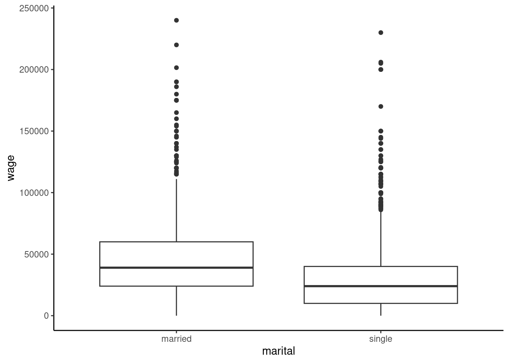
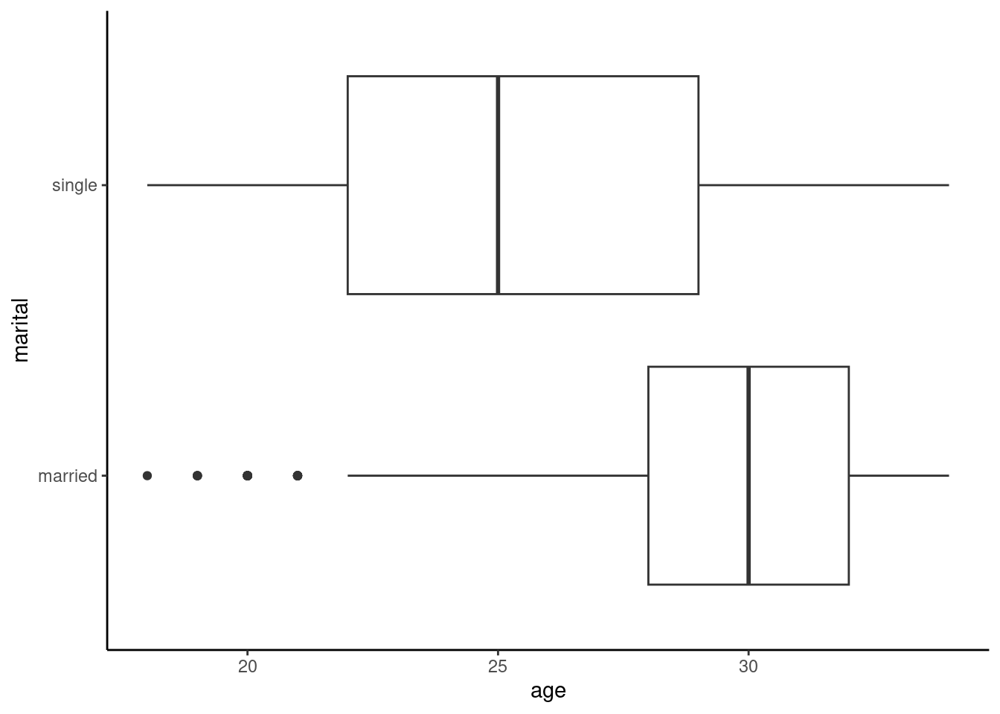
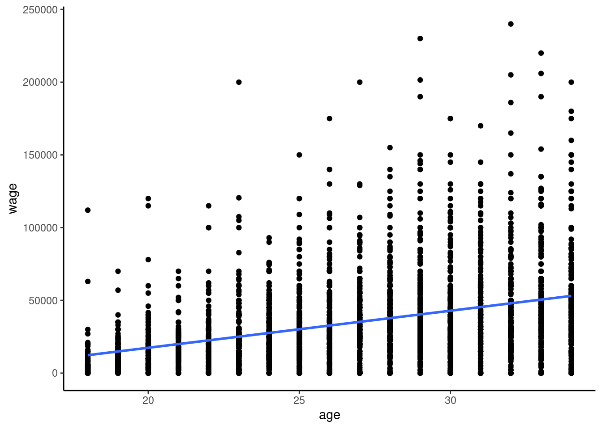
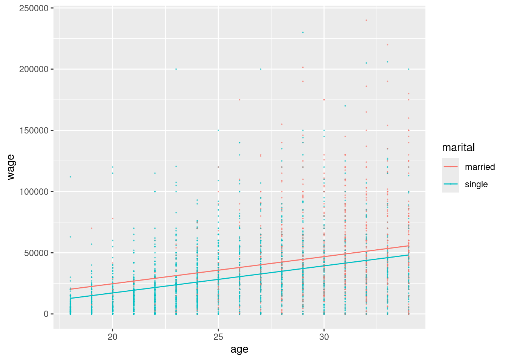
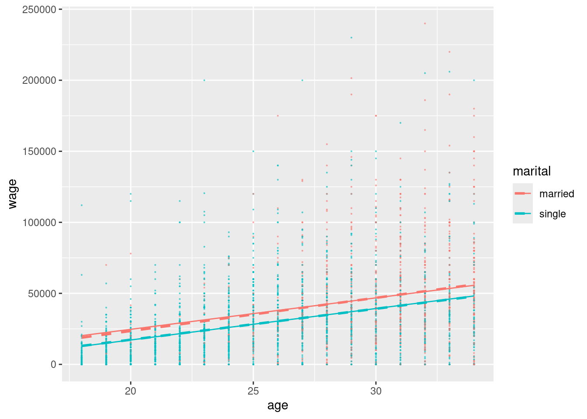
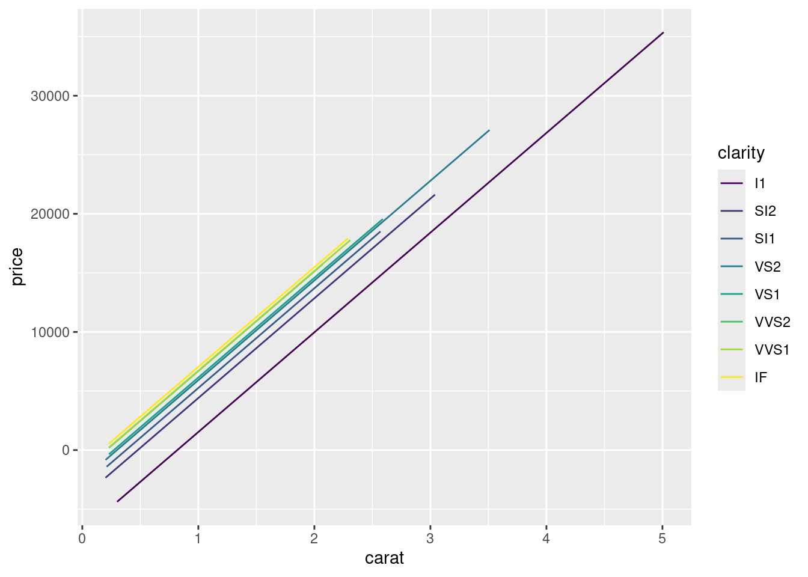
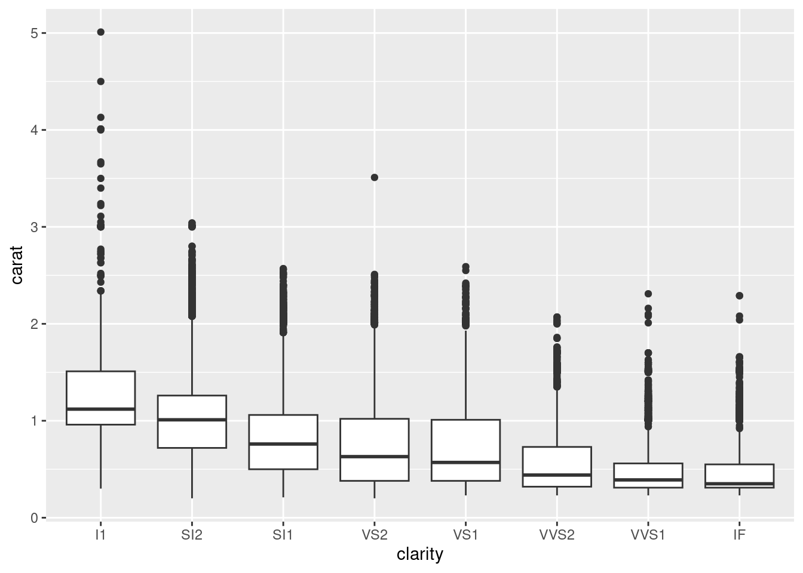

# Load useful packages and data
library(readr)
library(ggplot2)
library(dplyr)
peaks <- read_csv("https://mac-stat.github.io/data/high_peaks.csv") %>%
mutate(ascent = ascent / 1000)
# Check it out
head(peaks)Confounding variables
Notes
- Slides with comments on Quiz 1
- You can download a template file to work with here.
- File organization: Save this file in the “Activities” subfolder of your “STAT155” folder.
Learning goals
By the end of this lesson, you should be familiar with:
- confounding variables
- how to control for confounding variables in our models
- how to represent the role of confounding variables using causal diagrams
Readings and videos
Before class you should have read and watched:
- Sections 3.9.2 in the STAT 155 Notes
- Confounding (and other causal diagrams)
- Watch from 0:00 - 6:54
Exercises
Exercise 1: Review
The peaks data includes information on hiking trails in the 46 “high peaks” in the Adirondack mountains of northern New York state:
Below is a model of the time (in hours) that it takes to complete a hike by the hike’s length (in miles), vertical ascent(in 1000s of feet), and rating (easy, moderate, or difficult):
peaks_model <- lm(time ~ length + ascent + rating, data = peaks)
coef(summary(peaks_model))Interpret the length and ratingeasy coefficients in the model formula below by using our strategy:
Strategy: When interpreting a coefficient for a variable x, compare two units whose values of x differ by 1 but who are identical for all other variables.
E[time | length, ascent, rating] = 6.511 + 0.459 length + 0.187 ascent - 3.169 ratingeasy - 2.477 ratingmoderate
Synthesis:
- Interpreting the coefficient \(\beta_Q\) for a quantitative variable Q:
- Holding all other variables constant, each unit increase in Q is associated with \(\beta_Q\) change (note if it’s an increase or decrease) in Y on average.
- Interpreting the coefficient \(\beta_C\) for an indicator variable:
- Holding all other variables constant, the average outcome for the group referenced by this indicator (group for whom indicator = 1), is \(\beta_C\) higher/lower than that of the reference group.
Exercise 2: Confounders
Research question: Is there a wage gap, hence possibly discrimination, by marital status among 18-34 year olds?
To explore, we can revisit the cps data with employment information collected by the U.S. Current Population Survey (CPS) in 2018. View the codebook here.
# Import data
cps <- read_csv("https://mac-stat.github.io/data/cps_2018.csv") %>%
filter(age >= 18, age <= 34) %>%
filter(wage < 250000)
# Check it out
head(cps)Recall that a simple linear regression model of wage by marital suggests that single workers make $17,052 less than married workers:
wage_model_1 <- lm(wage ~ marital, data = cps)
coef(summary(wage_model_1))That’s a big gap!!
BUT this model ignores important confounding variables that might help explain this gap.
A confounding variable is a cause of both the predictor of interest (marital) and of the response variable (wage).
We can represent this idea with a causal diagram:
Another definition of a confounding variable is one that
- is a cause of the outcome (wage)
- is associated with the main variable of interest (marital status)
- NOT caused by the variable of interest
We can represent this on the causal diagram with a line from the confounder to the variable of interest (instead of an arrow):
Name at least 2 potential confounders.
Exercise 2b: How & why do confounders bias results?
Unaccounted-for confounders are often a source of bias in our models, meaning that when we ignore them, we often over- or under-estimate the true underlying relationship between a predictor and response variable. To explore why this is important, let’s first look at how our focal predictor marital is associated with our response variable, wage:
cps %>%
ggplot(aes(x=marital, y=wage))+
geom_boxplot()+
theme_classic()Now, let’s consider age as a potential confounder. The following plot shows how age is associated with marital status:
cps %>%
ggplot(aes(x=age, y=marital))+
geom_boxplot()+
theme_classic()…this should make sense, because the older a person is, the more likely they are to be married. Similarly, we can show how age is associated with wage:
cps %>%
ggplot(aes(x=age, y=wage))+
geom_point()+
geom_smooth(method="lm", se=F)+
theme_classic()Here we see that there is a positive correlation between age and wages (which again makes sense, because people who have been in the workforce longer typically earn more).
Let’s revisit our initial plot showing the relationship between marital status and wages:
cps %>%
ggplot(aes(x=marital, y=wage))+
geom_boxplot()+
theme_classic()Since we now know that age is associated with both being married and higher wages, this plot doesn’t tell the full story–people who are married could simply be earning higher wages because they tend to be older, not necessarily because they are married! Age is therefore a confounder in the relationship between marital status and wages.
Exercise 3: Controlling for confounders
The exercise above illustrates that it is important to control or adjust for confounding variables when trying to understand the actual causal relationship between a predictor (e.g. marital) and response (e.g. wage).
Sometimes, we can control (adjust) for confounding variables through a carefully designed experiment. For example, in comparing the effectiveness (y) of 2 different cold remedies (x), we might want to control for the age, general health, and severity of symptoms among the participants. How might we do that?
BUT we’re often working with observational, not experimental, data. Why? Well, explain what an experiment might look like if we wanted to explore the relationship between
wage(y) andmaritalstatus (x) while controlling forage.
Exercise 4: Age
We’re in luck.
We can control (adjust) for confounding variables by including them in our model!
That’s one of the superpowers of multiple linear regression.
Let’s start simple, by controlling for age in our model of wages by marital status:
# Construct the model
wage_model_2 <- lm(wage ~ marital + age, cps)
coef(summary(wage_model_2))- Visualize this model by modifying the code below.
(Note: The last line where we add a geom_line layer adds in trendlines similar to what we might obtain using geom_smooth, but it uses the exact fitted values from our model. geom_smooth, on the other hand, adds in trendlines based on fitting two separate models to the married and single subsets of the data. Tray adding geom_smooth(method="lm", se=F, linetype="dashed") to the plot to see how they compare).
ggplot(cps, aes(y = ___, x = ___, color = ___)) +
geom____(size = 0.1, alpha = 0.5) +
geom_line(aes(y = wage_model_2$fitted.values), linewidth = 0.5)Suppose 2 workers are the same age, but one is married and one is single. By how much do we expect the single worker’s wage to differ from the married worker’s wage? (How does this compare to the $17,052 marital gap among all workers?)
How can we interpret the
maritalsinglecoefficient?
Exercise 5: More confounders
Let’s control for even more potential confounders!
Model wages by marital status while controlling for age and years of education:
wage_model_3 <- lm(wage ~ marital + age + education, cps)
coef(summary(wage_model_3))With so many variables, this is a tough model to visualize. If you had to draw it, how would the model trend appear: 1 point, 2 points, 2 lines, 1 plane, or 2 planes? Explain your rationale. Hint: pay attention to whether your predictors are quantitative or categorical.
Given our research question, which coefficient is of primary interest? Interpret this coefficient.
Interpret the two other coefficients in this model.
Exercise 6: Even more
Let’s control for another potential confounder, the job industry in which one works (categorical):
wage_model_4 <- lm(wage ~ marital + age + education + industry, cps)
coef(summary(wage_model_4))If we had to draw it, this model would appear as 12 planes.
The original plane explains the relationship between wage and the 2 quantitative predictors, age and education.
Then this plane is split into 12 (2*6) individual planes, 1 for each possible combination of marital status (2 possibilities) and industry (6 possibilities).
Interpret the main coefficient of interest for our research question.
When controlling for a worker’s age, marital status, and education level, which industry tends to have the highest wages? The lowest? Note: the following table shows the 6 industries:
cps %>% count(industry)Exercise 7: Biggest model yet
Build a model that helps us explore wage by marital status while controlling for: age, education, job industry, typical number of work hours, and health status.
Store this model as wage_model_5.
Exercise 8: Reflection
Take two workers – one is married and the other is single.
The models above provided the following insights into the typical difference in wages for these two groups:
| Model | Assume the two people have the same… | Wage difference |
|---|---|---|
wage_model_1 |
NA | -$17,052 |
wage_model_2 |
age | -$7,500 |
wage_model_3 |
age, education | -$6,478 |
wage_model_4 |
age, education, industry | -$5,893 |
wage_model_5 |
age, education, industry, hours, health | -$4,993 |
Though not the case in every analysis, the
maritalcoefficient got closer and closer to 0 as we controlled for more confounders. Explain the significance of this phenomenon, in context - what does it mean?Do you still find the wage gap for single vs married people to be meaningfully “large”? Can you think of any remaining factors that might explain part of this remaining gap? Or do you think we’ve found evidence of inequitable wage practices for single vs married workers?
Exercise 9: A new (extreme) example
For a more extreme example of why it’s important to control for confounding variables, let’s return to the diamonds data:
# Import and wrangle the data
data(diamonds)
diamonds <- diamonds %>%
mutate(
cut = factor(cut, ordered = FALSE),
color = factor(color, ordered = FALSE),
clarity = factor(clarity, ordered = FALSE)
) %>%
select(price, clarity, cut, color, carat)Our goal is to explore how the price of a diamond depends upon its clarity (a measure of quality).
Clarity is classified as follows, in order from best to worst:
| clarity | description |
|---|---|
| IF | flawless (no internal imperfections) |
| VVS1 | very very slightly imperfect |
| VVS2 | ” ” |
| VS1 | very slightly imperfect |
| VS2 | ” ” |
| SI1 | slightly imperfect |
| SI2 | ” ” |
| I1 | imperfect |
- Check out a model of
pricebyclarity. What clarity has the highest average price? The lowest? (This is surprising!)
diamond_model_1 <- lm(price ~ clarity, data = diamonds)
# Get a model summary
coef(summary(diamond_model_1))- What confounding variable might explain these results? What’s your rationale?
Exercise 10: Size
It turns out that carat, the size of a diamond, is an important confounding variable.
Let’s explore what happens when we control for this in our model:
diamond_model_2 <- lm(price ~ clarity + carat, data = diamonds)
# Get a model summary
coef(summary(diamond_model_2))
# Plot the model
diamonds %>%
ggplot(aes(y = price, x = carat, color = clarity)) +
geom_line(aes(y = diamond_model_2$fitted.values))What do you think now?
Which clarity has the highest expected price?
The lowest?
Provide numerical evidence from the model.
Exercise 11: Simpson’s Paradox
Controlling for carat didn’t just change the clarity coefficients, hence our understanding of the relationship between price and clarity… It flipped the signs of many of these coefficients.
This extreme scenario has a name: Simpson’s paradox.
CHALLENGE: Explain why this happened and support your argument with graphical evidence.
HINTS: Think about the causal diagram below. How do you think carat influences clarity? How do you think carat influences price? Make 2 ggplot() that support your answers.
Exercise 12: Final conclusion
What’s your final conclusion about diamond prices?
Which diamonds are more expensive: flawed ones or flawless ones?
Reflection
Write a one-sentence warning label for what might happen if we do not control for confounding variables in our model.
Response: Put your response here.
Solutions
Exercise 1: Review
peaks_model <- lm(time ~ length + ascent + rating, data = peaks)
coef(summary(peaks_model))
## Estimate Std. Error t value Pr(>|t|)
## (Intercept) 6.5106514 1.62983740 3.994663 2.627176e-04
## length 0.4590819 0.08158314 5.627166 1.465288e-06
## ascent 0.1874830 0.34215350 0.547950 5.866973e-01
## ratingeasy -3.1685224 0.86219113 -3.674965 6.827232e-04
## ratingmoderate -2.4767827 0.61058560 -4.056405 2.177589e-04lengthcoefficient:- Among hikes with the same vertical ascent and challenge rating, each additional mile of the hike is associated with a 0.46 hour increase in completion time on average.
- Holding vertical ascent and challenge rating constant (fixed), each additional mile of the hike is associated with a 0.46 hour increase in completion time on average.
ratingeasycoefficient:- Among hikes with the same length and vertical ascent, the average completion time of easy hikes is 3.2 hours less than that of difficult hikes (reference category).
- Holding constant hike length and vertical ascent, the average completion time of easy hikes is 3.2 hours less than that of difficult hikes.
Exercise 2: Confounders
age, education, job industry, …
marital vs wage:
cps %>%
ggplot(aes(x=marital, y=wage))+
geom_boxplot()+
theme_classic()
age vs marital:
cps %>%
ggplot(aes(x=age, y=marital))+
geom_boxplot()+
theme_classic()
age vs wage:
cps %>%
ggplot(aes(x=age, y=wage))+
geom_point()+
geom_smooth(method="lm", se=F)+
theme_classic()
Exercise 3: Controlling for confounders
create 2 separate groups that are as similar as possible with respect to these variables. give the groups different remedies.
we’d have to get 2 groups that are similar with respect to age, and assign 1 group to get married and 1 group to be single. that would be weird (and unethical).
Exercise 4: Age
# Construct the model
wage_model_2 <- lm(wage ~ marital + age, cps)
coef(summary(wage_model_2))
## Estimate Std. Error t value Pr(>|t|)
## (Intercept) -19595.948 3691.6998 -5.308110 1.184066e-07
## maritalsingle -7500.146 1191.8526 -6.292847 3.545964e-10
## age 2213.869 120.7701 18.331265 2.035782e-71- .
cps %>%
ggplot(aes(y = wage, x = age, color = marital)) +
geom_point(size = 0.1, alpha = 0.5) +
geom_line(aes(y = wage_model_2$fitted.values), size = 0.5)
bonus! adding in the geom_smooth layer:
cps %>%
ggplot(aes(y = wage, x = age, color = marital)) +
geom_point(size = 0.1, alpha = 0.5) +
geom_line(aes(y = wage_model_2$fitted.values), size = 0.5)+
geom_smooth(method="lm", se=F, linetype="dashed")
-$7500
- When controlling for (“holding constant”) age, single workers make $7500 less than married workers on average.
- Among workers of the same age, single workers make $7500 less than married workers on average.
Exercise 5: More confounders
wage_model_3 <- lm(wage ~ marital + age + education, cps)
coef(summary(wage_model_3))
## Estimate Std. Error t value Pr(>|t|)
## (Intercept) -64898.607 4099.8737 -15.829416 2.254709e-54
## maritalsingle -6478.094 1119.9345 -5.784351 7.988760e-09
## age 1676.796 116.3086 14.416777 1.102113e-45
## education 4285.259 207.2158 20.680173 3.209448e-892 planes: There are 2 quantitative predictors which form the dimensions of the plane. The marital status categorical predictor creates 2 planes.
The
maritalsinglecoefficient is of main interest:- Among workers of the same age and years of education, single workers earn $6478 less than married workers.
agecoefficient: Among workers of the same marital status and years of education, each additional year of age is associated with a $1677 increase in salary on average.educationcoefficient: Among workers of the same marital status and age, each additional year of education is associated with a $4285 increase in salary on average.
Exercise 6: Even more
wage_model_4 <- lm(wage ~ marital + age + education + industry, cps)
coef(summary(wage_model_4))
## Estimate Std. Error t value Pr(>|t|)
## (Intercept) -52498.857 7143.8481 -7.3488206 2.533275e-13
## maritalsingle -5892.842 1105.6898 -5.3295615 1.053631e-07
## age 1493.360 116.1673 12.8552586 6.651441e-37
## education 3911.117 243.0192 16.0938565 4.500408e-56
## industryconstruction 5659.082 6218.5649 0.9100302 3.628760e-01
## industryinstallation_production 1865.650 6109.2613 0.3053806 7.600964e-01
## industrymanagement 1476.884 6031.2901 0.2448704 8.065727e-01
## industryservice -7930.403 5945.6509 -1.3338158 1.823603e-01
## industrytransportation -1084.176 6197.2462 -0.1749448 8.611342e-01Among workers of the same job industry, education, and age, single workers make $5893 less than a married worker on average.
highest = construction (because it has the highest positive coefficient), lowest = service (because it has the most negative coefficient)
Exercise 7: Biggest model yet
wage_model_5 <- lm(wage ~ marital + age + education + industry + hours + health, cps)
coef(summary(wage_model_5))
## Estimate Std. Error t value Pr(>|t|)
## (Intercept) -64886.5747 6914.18198 -9.38456275 1.171028e-20
## maritalsingle -4992.7685 1061.84882 -4.70195794 2.687274e-06
## age 1061.1410 115.83503 9.16079518 9.031462e-20
## education 3443.7625 236.12723 14.58435151 1.128646e-46
## industryconstruction 5381.3857 5959.05620 0.90306007 3.665630e-01
## industryinstallation_production 2951.0372 5854.23981 0.50408547 6.142365e-01
## industrymanagement 5107.6364 5782.95334 0.88322283 3.771832e-01
## industryservice -3074.5127 5705.56537 -0.53886207 5.900201e-01
## industrytransportation -207.3439 5940.02074 -0.03490626 9.721567e-01
## hours 732.1340 43.72488 16.74410733 2.340115e-60
## healthfair -7407.7981 2901.71339 -2.55290483 1.072955e-02
## healthgood -2470.8096 1259.44276 -1.96182766 4.987035e-02
## healthpoor -9086.9110 7657.43781 -1.18667774 2.354441e-01
## healthvery_good 292.5278 1020.89213 0.28654136 7.744823e-01Exercise 8: Reflection
- These confounders explained away more and more of the wage gap between single and married workers.
- Answers will vary. A potential factor that we haven’t considered is a worker’s role within a given industry.
Exercise 9: A new (extreme) example
| clarity | description |
|---|---|
| IF | flawless (no internal imperfections) |
| VVS1 | very very slightly imperfect |
| VVS2 | ” ” |
| VS1 | very slightly imperfect |
| VS2 | ” ” |
| SI1 | slightly imperfect |
| SI2 | ” ” |
| I1 | imperfect |
diamond_model_1 <- lm(price ~ clarity, data = diamonds)
# Get a model summary
coef(summary(diamond_model_1))
## Estimate Std. Error t value Pr(>|t|)
## (Intercept) 3677.41676 25.88161 142.086092 0.000000e+00
## clarity.L -1723.35264 98.72036 -17.456913 4.696367e-68
## clarity.Q -428.36467 96.70081 -4.429794 9.450847e-06
## clarity.C 647.87442 83.30820 7.776838 7.567234e-15
## clarity^4 -123.13052 66.72533 -1.845334 6.499443e-02
## clarity^5 804.80570 54.62487 14.733320 4.907171e-49
## clarity^6 -273.65013 47.67881 -5.739449 9.549240e-09
## clarity^7 81.18721 42.01910 1.932150 5.334619e-02highest = SI2, lowest = VVS1
will vary.
Exercise 10: Size
diamond_model_2 <- lm(price ~ clarity + carat, data = diamonds)
# Get a model summary
coef(summary(diamond_model_2))
## Estimate Std. Error t value Pr(>|t|)
## (Intercept) -2977.26896 13.11110 -227.0799509 0.000000e+00
## clarity.L 4216.77507 33.65424 125.2969766 0.000000e+00
## clarity.Q -1931.40632 31.87080 -60.6011296 0.000000e+00
## clarity.C 1005.84704 27.39341 36.7185805 1.486332e-291
## clarity^4 -480.17830 21.94294 -21.8830399 1.089041e-105
## clarity^5 283.94435 17.97527 15.7963882 4.403172e-56
## clarity^6 12.66308 15.68062 0.8075624 4.193461e-01
## clarity^7 198.04828 13.81518 14.3355543 1.597902e-46
## carat 8440.05729 12.65126 667.1315412 0.000000e+00
# Plot the model
diamonds %>%
ggplot(aes(y = price, x = carat, color = clarity)) +
geom_line(aes(y = diamond_model_2$fitted.values))
highest = IF, lowest = I1 (reference category)
This is what we would have expected!
Exercise 11: Simpson’s Paradox
The bigger the diamond the bigger the price:
diamonds %>%
ggplot(aes(y = price, x = carat)) +
geom_point()
BUT the bigger the diamond, the more flawed it tends to be:
diamonds %>%
ggplot(aes(y = carat, x = clarity)) +
geom_boxplot()
Thus flawed diamonds looked more expensive, but only because they also tend to be bigger (and size is a bigger driver of price).
Exercise 12: Final conclusion
Flawless diamonds are more expensive.